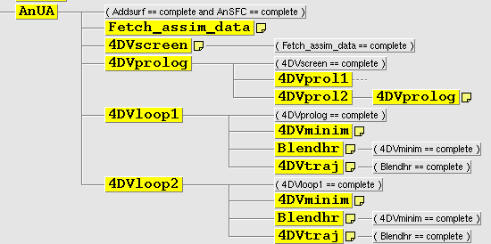
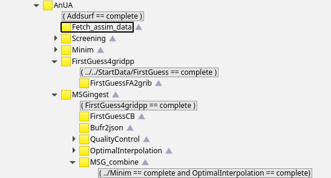
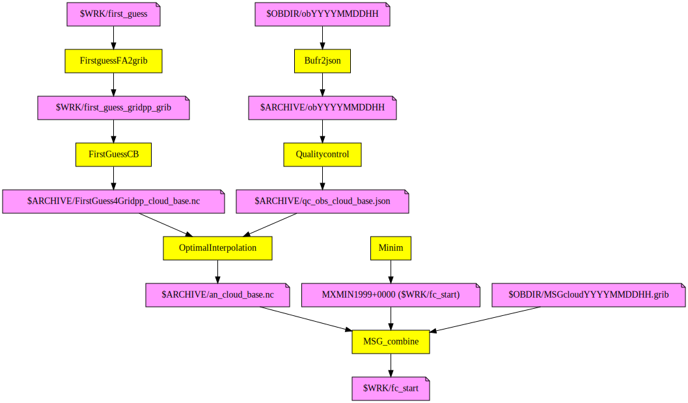

Data assimilation algorithms
3D-Var
The default upper-air data assimilation algorithm is three-dimensional variational assimilation (3D-Var). To use 3D-Var no changes to ecf/config_exp.h should be required assuming structure function data files are available for your domain. Structure function input is defined in scr/include.ass.
Settings
List of 3D-Var settings that the user should be concerned about.
4D-Var
With 43h2.2 four-dimensional variational assimilation (4D-Var) is available as a non-default option. In order to setup an experiment to use 4D-Var one should issue the following commands:
mkdir -p /path/to/home/hm_home/MY_EXP
cd /path/to/home/hm_home/MY_EXP
/path/to/Harmonie/config-sh/Harmonie setup -r /path/to/Harmonie -c AROME_4DVARTo use 4D-Var no changes to ecf/config_exp.h should be required assuming suitable structure function data files are available for your domain (see also ILRES in the settings section). Structure function input is defined in scr/include.ass.
Settings
List of 4D-Var settings that the user should be concerned about.
With the following settings the working of the 4D-Var can be changed. Defaults values are given
NOUTERLOOP=2 # number of 4DVAR outer loops
ILRES=6,3 # Resolution (in parts of full) of outer loops as compared to the forecast resolution. The domain NLATxNLON should have the property that for the settings of ILRES both NLON/ILRES and NLAT/ILRES are of the form 5^c^ 3^d^ 2^e^, where c, d and e are integers >= 0 and e>=1.
TSTEP4D=300,150 # Timestep length (seconds) of outer loops TL+AD
TSTEPTRAJ=300,300 # How often the model state is saved for linearization
NITER4D=10,15 # Maximum number of inner loop iterations in 4D-Var outer loops
NSIMU4D=15,20 # Maximum number of cost function simulations in 4D-Var outer loops
CH_RES_SPEC=yes # yes => change of resolution of the increment spectrally; no => by FULLPOS
FORCE1=no # yes => tendency increment; no => analysis increment in loop 1
FORCE2=no # yes => tendency increment; no => analysis increment in loop 2Schematic work flow of 4D-Var

- After the screening
4DVscreenfor the default 3h observation window (2h before and 1h after the start of the main forecast), 4DVprologprepares the initial conditions at the appropriate resolution (ILRESsettings) for the forecasts used in minimization. The input here is the backgroundBGHR (ICMSHHARM+0001fields of the former cycle supplemented with some surface fields).- Subsequently
4DVminimproduces initially the low resolution at the beginning of the observation window (an_lowres_$loop), which is then (CH_RES_SPEC=yesinconfig_exp.h) transformed to the field at forecast resolution (an_hr_begwin). - This field is complemented in
Blendhrwith necessary surface fields and the resulting field (anb_hr_begwin) acts as the initial condition for the trajectory run4DVtraj. - From the 2h forecast of
4DVtraj(ICMSHTRAJ+0002fields) the main forecast is started.
Cloudingest - Cloud Initialization
The cloud initialization modifies temperature and humidity fields with help of MSGcloudYYYYMMDDHH.grib file, which contains 2-d fields of cloudtop-temperature [K], cloudmask [0-1] and cloudbase [m]. Pre cy46h the Cloudingest happened within MASTERODB in src/arpifs specifically in src/arpifs/phys_dmn/msginit.F90 routine. Since cy46h the Cloudingest uses pysurfex and gl to do the job.
Settings
Enable Cloudingest in ecf/config_exp.h:
USE_MSG=yes # Use MSG data for adjustment of inital profiles, EXPERIMENTAL! (no|yes), expects MSGcloudYYYYMMDDHH.grib in $OBDIRAnd in src/include.ass:
export CLOUD_BASE=1 # 1 and USE_MSG=true (ecf/config_exp.h) => msginitto replace the cloudbase field in MSGcloudYYYYMMDDHH.grib with an OI interpolated field of SYNOP observations of CloudBaseHeights and postprocessed field of cloudbases of the first-guess file.
Ecflow and schematic work flow of Cloudingest
In case of 3DVar assimilation, the ecflow AnUA family should look like this:

And a schematic work-flow of tasks and files involved:

Incremental Analysis Updates - IAU
This is a modified and experimental version of the default implemented Forward-Facing Incremental Analysis Update, that is described elsewhere (and mainly controlled via namelist settings). This algoritm is using the same code but is changed in a few fundamental ways on the logistical plane. Instead of introducing the innovations gradually in the forecast from the analysis point (as in default 3Dvar) the analysis is done at "t=0" and then the forecast is started at an earlier point so that the center of the introductions of the innovations are located at the above mentioned analysis point.
This is done through shifting the forecast start to 1h before "t=0" and activating a namelist change in the forecast namelist:
NAMIAU=>{
'LIAU' => '.TRUE.,',
'TSTARTIAU' => '1800.0,',
'TSTOPIAU' => '5400.0,',
'ALPHAIAU' => '1.0,',Hence the forecast is running freely for 30min and then starts adding the increments during 1h centered around the "t=0" point, during 1h. If these times are subject of change (for example if a larger window is desired, mind that you also need to have change what files are linked to various process such as the forecast so that the correct start files are linked to that process.
Settings
If you want to try this method, or want to test it in order to develop it further there is a few thing to keep in mind. Before doing anything else you have to modify the write up times in ecf/config_exp.h so that the model have access to the startfiles that it needs inorder to start.
From the DEFAULT:
LL_LIST="12,3" # Forecast lengths for the cycles [h], replaces LL, LLMAIN
HWRITUPTIMES="00-21:3,24-60:6" # History file output times
FULLFAFTIMES=$HWRITUPTIMES # History FA file IO server gather times
PWRITUPTIMES="00-60:3" # Postprocessing times
PFFULLWFTIMES=$PWRITUPTIMES # Postprocessing FA file IO server gathering times
VERITIMES="00-60:1" # Verification output times, changes PWRITUPTIMES/SFXSELTIMES
SFXSELTIMES=$PWRITUPTIMES # Surfex select file output timesto:
LL_LIST="12,6" # Forecast lengths for the cycles [h], replaces LL, LLMAIN
HWRITUPTIMES="00-06:1,06-21:3,24-60:6" # History file output times
FULLFAFTIMES=$HWRITUPTIMES # History FA file IO server gather times
PWRITUPTIMES="00-06:1,06-60:3" # Postprocessing times
PFFULLWFTIMES=$PWRITUPTIMES # Postprocessing FA file IO server gathering times
VERITIMES="00-60:1" # Verification output times, changes PWRITUPTIMES/SFXSELTIMES
SFXSELTIMES=$PWRITUPTIMES # Surfex select file output times
# Only meaningful if SURFEX_LSELECT=yes
SFXSWFTIMES=$SFXSELTIMES # SURFEX select FA file IO server gathering times
SWRITUPTIMES="00-06:1" # Surfex model state output times
SFXWFTIMES=$SWRITUPTIMES # SURFEX history FA file IO server gathering timesThen run one cycle for at least 6h so that all the prerequesite files are generated before turning on IAUVAR.
Second thing, when the previous run has completed, is to set the IAUVAR
ecf/config_exp.hto yes and keep running. It should be automatic to continue as usual. Make sure that you do not manually setLLto be shorter then 6h.
The surface assimilation is moved to the start of the forecast and hence it is only the upper air assimilation that is involved in the IAU.
There is a difference between the first run with IAUVAR and all the following, due to the first run couples to a run done without IAU and the others couple to a run that has done IAU, so the files used as startfiles are different in valid times. To this effect the first run saves a semaphore file in the $SCRATCH/hm_home/exp_name/ directory for the following runs to react to! So if you need to rerun the first run, for some reason, that semaphore file (named is_iauvar) needs to be manually removed!!